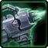
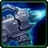
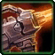
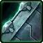
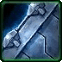
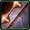

- Stats
- Abilities/Upgrades
- Strategy
- Lore
- Related

Armor: 1
Mineral Repair Cost:
 37.5
37.5Gas Repair Cost:
 31.25
31.25Repair Time:
 45
45 0/0 0 per second
0/0 0 per secondName: 90mm Twin Cannons
Damage: 15 (25 vs armored)
Attacks: 1
Cooldown: 1.04
Targets: Ground only
Attack Range: 7
- Siege Mode-
Name: 120mm Crucio Shock Cannon
Damage: 35 (50 vs armored) (splash)
Attack: 1
Cooldown: 3
Targets: Ground only
Attack Range: 2-13
Requirements: Levels 2-3 requires Armory
| Level |  Level 1 |  Level 2 |  Level 3 |
| Minerals | 100 | 175 | 250 |
| Vespene Gas | 100 | 175 | 250 |
| Time | 160 | 190 | 220 |
| Damage Bonus | +2 (+3) | +3 (+5) | +4 (+6) | +6 (+10) | +6 (+9) | +9 (+15) |
| Total Damage | 17 (28) | 38 (55) | 19 (31) | 41 (60) | 21 (34) | 44 (65) |
0 in Siege Mode
Acceleration: 1000
Collision Radius: 0.875
150Vespene Cost:
125Supply:
 3
3Produced From: Factory with Tech Lab Build Time:
45Requirements: Factory with Tech Lab
Requirements: Levels 2-3 requires Armory
| Level |  Level 1 |  Level 2 |  Level 3 |
| Minerals | 100 | 175 | 250 |
| Vespene Gas | 100 | 175 | 250 |
| Time | 160 | 190 | 220 |
| Armor Bonus | +1 | +2 | +3 |
| Total Armor | 2 | 3 | 4 |
Medivac Size: 4
Unit Type: Armored, Mechanical, Ground
| Icon | Minerals | Vespene Gas | Research Time | Researched At |
| 100 | 100 | 80 | Tech Lab on Factory |
Duration:
4Information: Siege Tech allows Siege Tanks to tranform with Siege mode. While in Siege mode, the tank's attack range is increased to 13, attacks slower, and does splash damage.
The amount of damage a Siege Tank does in Siege mode for the splash depends on how far the unit is from the attacked unit. Units that are within 0.4687 range of the attack take full damage, units within 0.4687 and 0.7812 receive 50% damage, and units within 0.7812 and 1.25 only take 25% damage.
The Siege tank is immobile while transforming for 4 seconds, and is also immobile until it goes back into Tank Mode.
| Icon | Minerals | Vespene Gas | Research Time | Researched At |
| 0 | 0 | 0 | Unlocked with Siege Tech |
Duration:
4Information: Tank Mode transforms the Siege Tank back into its original mobile form, giving the Siege tank its old weapon again.
The Siege tank is immobile while transforming for 4 seconds, but is then free to move around once done.
If you have any suggestions for more strategies, go ahead and post on the forums 'here'!
+1 Weapons vs Zerglings
When Zealots have a +1 weapon advantage versus Zerglings, they will kill Zerglings in two attacks instead of three. This makes Zealots very effecient against Zerglings until the zerg catches up in armor upgrades.
Because of this, there are a handful of timing attack that take advantage of the effecient +1 weapon zealots, forcing the zerg to make spines, roaches, or some other unit than zerglings unless the zerg wants to trade inefficiently.
+1 Weapons vs Zerglings
Sum text about how gosu this is
+1 Weapons vs Zerglings
Sum text about how gosu this is
- Overview
- Variations
The dual-mode siege tank concept was a response to the Guild Wars and the goliath. Prior to the war, work had progressed on a static "final defense" cannon. However, the conflict demonstrated the need for mobility and as a result an effort was made to make the cannon more mobile.
The solution was creative. An existing tank design was modified so that it could operate as a conventional tank in addition to being able to deploy the cannon and become a static artillery emplacement at will. Mobile siege tanks were in existence by 2480, several years before the official beginning of the Guild Wars. These tanks were able to be fueled by oil.
Siege tanks function in two modes. First is the "tank" or "assault mode" in which the vehicle may be used in the familiar armored support role using relative light weapons. The second is the more radical "siege mode" in which the vehicle becomes a static emplacement able to deploy a much more powerful and longer ranged weapon.
{kind=link}
AAV-5 Arclite
The AAV-5 was in service by 2491, renowned throughout the Confederacy for its heavy firepower and stalwart emplacement/advance tactics. It had a crew of three: gunner, driver, and commander/navigator, though could still be crewed by a single operator. In addition, the Arclite version could serve as an APC of sorts, carrying personnel into a hot zone and deploying them via side/rear hatches.
The Arclite made navigation easy via its interior viewscreen, although a top hatch still existed should a crew member wish to survey the area personally and/or signal fellow soldiers. The tank also provided a targeting computer, which not only keyed in on heat sources, but also identified their range, notably whether they were in range or not via visual and audio indications.
Arclite armament consisted of twin 80mm PPG-7 plasma cannons when mobile and the 120mm Shock Cannon when in siege mode. Later on this was upgraded to the 120mm Mjolnir Artillery Cannon, which fired plasma shells in contrast to the standard explosives of the Shock Cannon. Such weapons were sometimes used for "scorched earth" operations.
By the aftermath of the Brood War however, the AAV-5's "tank/assault mode" left much to be desired. Its armament and armor was too light to either advance, or hold a firebase from close-quarters assault, without significant support. The Crucio was developed to address these shortcomings.
{kind=link}
Crucio
The Crucio was designed as the AAV-5's replacement., and had entered Dominion service by 2502.
The Crucio features superior protection and armament compared to its predecessor. The Crucio was designed for increased survivability, with an enlarged, reinforced turret and hull. The turret layout also features an upgraded Tank-Mode armament package, allowing the Crucio to defend itself more successfully in open battlefields. The Crucio is costlier than its predecessor, but its increased versatility justifies the expenses. By way of armament, the Crucio possesses twin 90mm plasma cannons. in its assault mode and a 180mm Shock Cannon that scatters superheated tungsten in an area 50% larger than the 120mm version. Maelstrom rounds are an alternate form of ammunition.
Dominion infantry soldiers are universally convinced that Crucio operators inflict more damage on friendly forces than on the enemy. Consequently, Crucio operators stick together during shore leave. LarsCorp addressed this issue by developing a "smart shell" for the Crucio that scans for allies on impact and adjusts its detonation to minimize damage to friendly units. Field tests have shown that this shell reduces friendly fire fatalities by 75%, though due caution is still recommended when walking into a fire zone.
{kind=link}
Source Information
Text information from the Starcraft Wiki.
Photo 1 from StarCraft II: Wings of Liberty. Copyright: Blizzard Entertainment.
Photo 2 created by Starghost. Copyright: Blizzard Entertainment.
Photo 3 created by Blizzard Entertainment. Copyright: Blizzard Entertainment.
| Terran |
| Units |
| Command Center | SCV | Mule |
| Barracks | Marine | Marauder | Ghost | Reaper |
| Factory | Hellion | Siege Tank | Thor |
| Starport | Medivac | Viking | Banshee | Raven | Battlecruiser |
| Structures |
| Basic Buildings | Command Center | Orbital Command | Supply Depot | Refinery |
| Defensive Buildings | Planetary Fortress | Bunker | Missile Turret | Sensor Tower |
| Infantry Buildings | Barracks | Engineering Bay | Ghost Academy |
| Mechanical Buildings | Factory | Starport | Armory | Fusion Core |
| Add-ons/Spawned | Auto-Turret | Point Defense Drone | Tech Lab | Reactor |